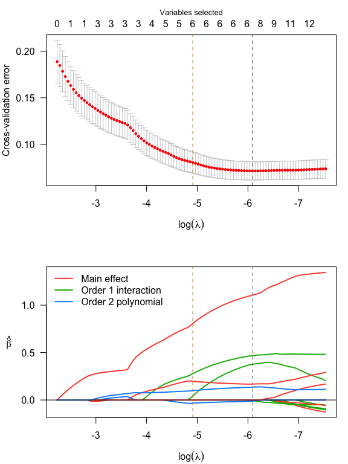
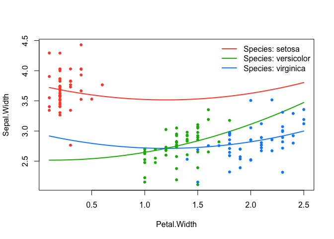

What is ranked sparsity?
The ranked sparsity methods such as the sparsity-ranked lasso (SRL) have been developed for model selection and estimation in the presence of interactions and polynomials (Peterson & Cavanaugh 2022)[https://doi.org/10.1007/s10182-021-00431-7]. The main idea is that an algorithm should be more skeptical of higher-order polynomials and interactions a priori compared to main effects, by a predetermined amount.
Package overview
The sparseR package has many features designed to streamline sifting through the high-dimensional space of interaction terms and polynomials, including functions for variable pre-processing, variable selection, post-selection inference, and post-fit model visualization under ranked sparsity. The package implements ranked-sparsity-based versions of the lasso, elastic net, MCP, and SCAD. We also provide a (preliminary) version of an sparsity-ranked extension to Bayesian Information Criterion (and corresponding stepwise approaches).
Installation
## Via GitHub:
# install.packages("devtools")
devtools::install_github("petersonR/sparseR")
# or via CRAN
install.packages("sparseR")Example
data(iris)
srl <- sparseR(Sepal.Width ~ ., data = iris, k = 1, poly = 2, seed = 1)
srl
#>
#> Model summary @ min CV:
#> -----------------------------------------------------
#> lasso-penalized linear regression with n=150, p=21
#> (At lambda=0.0023):
#> Nonzero coefficients: 7
#> Cross-validation error (deviance): 0.07
#> R-squared: 0.62
#> Signal-to-noise ratio: 1.64
#> Scale estimate (sigma): 0.267
#>
#> SR information:
#> Vartype Total Selected Saturation Penalty
#> Main effect 6 2 0.333 2.45
#> Order 1 interaction 12 3 0.250 3.46
#> Order 2 polynomial 3 2 0.667 3.00
#>
#>
#> Model summary @ CV1se:
#> -----------------------------------------------------
#> lasso-penalized linear regression with n=150, p=21
#> (At lambda=0.0074):
#> Nonzero coefficients: 6
#> Cross-validation error (deviance): 0.08
#> R-squared: 0.57
#> Signal-to-noise ratio: 1.35
#> Scale estimate (sigma): 0.284
#>
#> SR information:
#> Vartype Total Selected Saturation Penalty
#> Main effect 6 2 0.333 2.45
#> Order 1 interaction 12 2 0.167 3.46
#> Order 2 polynomial 3 2 0.667 3.00
par(mfrow = c(2,1), mar = c(4, 4, 3, 1))
plot(srl, plot_type = "both")
summary(srl, at = "cv1se")
#> lasso-penalized linear regression with n=150, p=21
#> At lambda=0.0074:
#> -------------------------------------------------
#> Nonzero coefficients : 6
#> Expected nonzero coefficients: 1.22
#> Average mfdr (6 features) : 0.204
#>
#> Estimate z mfdr Selected
#> Species_setosa 0.80638 18.013 < 1e-04 *
#> Sepal.Length_poly_1 0.19734 9.713 < 1e-04 *
#> Petal.Width_poly_2 0.09871 4.614 0.0011579 *
#> Petal.Width:Species_versicolor 0.27739 3.259 0.1328700 *
#> Sepal.Length_poly_2 -0.03363 -2.804 0.3663287 *
#> Sepal.Length:Species_setosa 0.04275 2.190 0.7229428 *
effect_plot(srl, "Petal.Width", by = "Species", at = "cv1se", legend_location = "topright")
For more examples and a closer look at how to use this package, check out the package website.
Many thanks to the authors and maintainers of ncvreg and recipes.